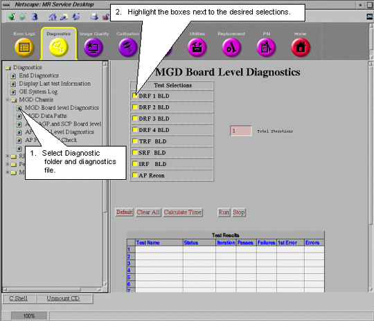

GE Exclusive Use Only
Direction 5670000, Rev# 1
Optima MR450w 1.5T Service Methods
Module Version 2.0, Version Date 3/7/08
GE Exclusive Use Only |
Select the desired diagnostic test to run. The components that can be tested are listed in Table 1 in Hardware Tested.
Tests can be deselected or selected from the Selection column by highlighting the box next to each. See example in Illustration 1. Other choices can be made depending on which test group is selected. These choices are described in the following sub-sections.
Illustration 1: EXAMPLE DIAGNOSTIC TEST SELECTIONS

The number entered in the Total Iterations box determines how many times the selected diagnostics will run.
Default – Selecting this will configure the selections and options into a default condition.
Clear All – Deselects all selections and options.
Calculate Time – Once all the selections and options are made then selecting this button will provide you with an estimate of the total run-time needed to complete all the tests.
Run – Select this button to start diagnostic test execution on the selected components.
Stop – Select this button to stop execution of the diagnostic tests.
Test Results are displayed in a table labeled Test Results which is located under the diagnostic selections. See Illustration 2.
Illustration 2: TEST RESULTS AND TEST STATUS WINDOWS

Test Name – Identifies executing test.
Status – Provides pass/fail status of test.
Iteration – Displays number of times test run.
Passes – Displays number of times test successfully completed.
Failures – Displays number of times test failed to complete successfully.
1st Error – Displays the first error encountered when test was run.
Errors – Displays subsequent errors.
Messages reporting on the status of the various executing tests are displayed in this window.
Leaving the Diagnostics Menu will abort any tests that are running. A link to the System Error Log has been provided in the Diagnostics page so that it is not necessary to leave the page to view the System Error log.
Illustration 3: ACCESSING ERROR LOG FROM DIAGNOSTICS MENU

Leaving the diagnostics page will end any tests that are still running. A TPS Reset must be completed after diagnostics have been run before the system will permit scanning. There are two ways that this can be done.
All tests can be ended and the TPS Reset from this window.
Illustration 4: ENDING DIAGNOSTICS AND RESETING TPS FROM DIAGNOSTICS MENU

If one leaves the Toolbelt Desktop and goes to the scan Desktop and attempts to select New Patient to setup a scan, the system will ask for confirmation that diags should be stopped and a TPS Reset should occur. After the reset successfully finishes, the system will permit scanning.
Illustration 5: ENDING DIAGNOSTICS AND RESETTING TPS FROM SCAN DESKTOP